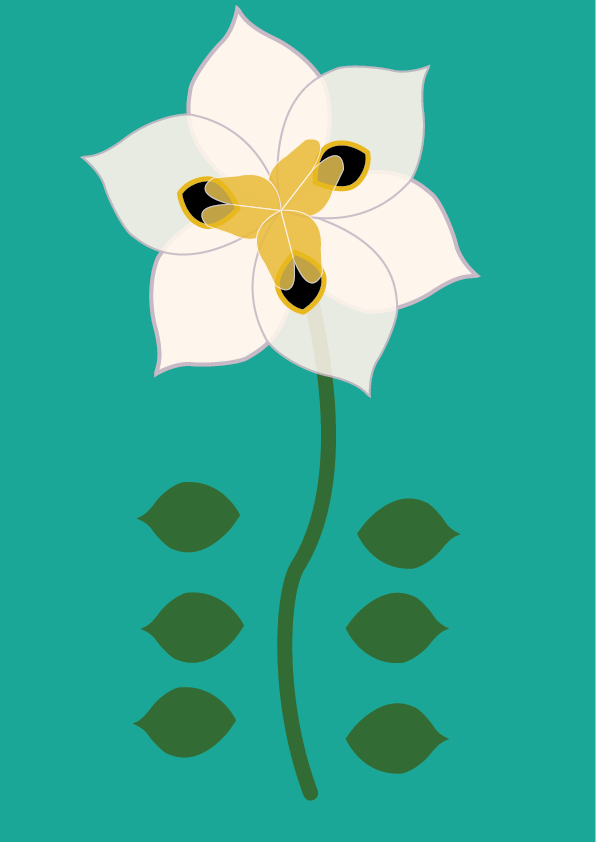
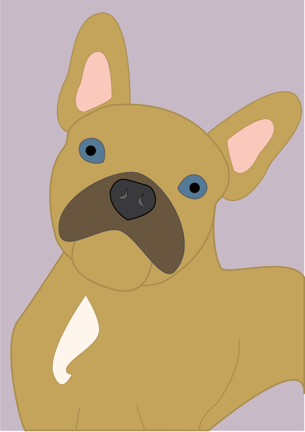
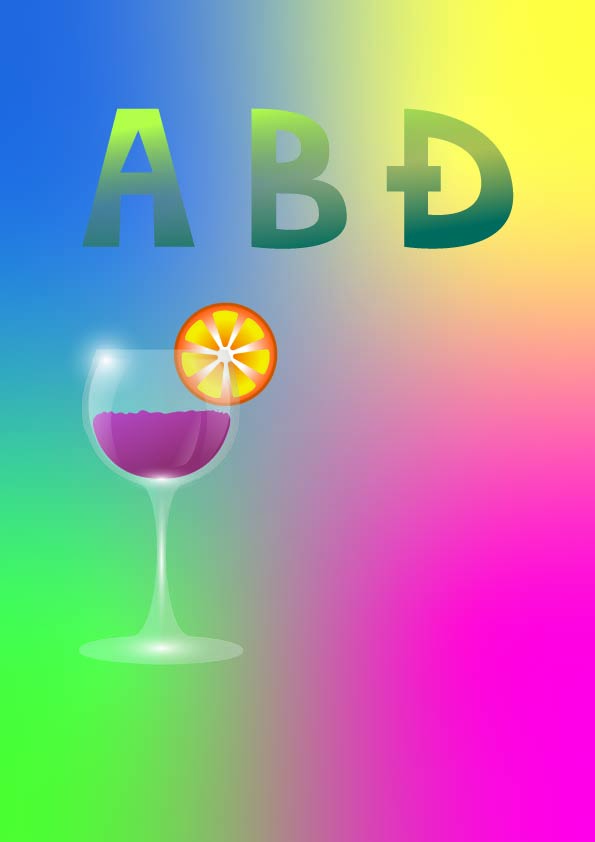
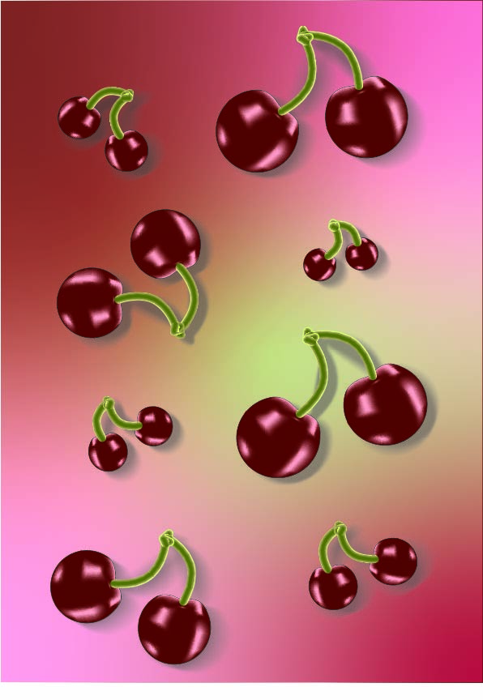
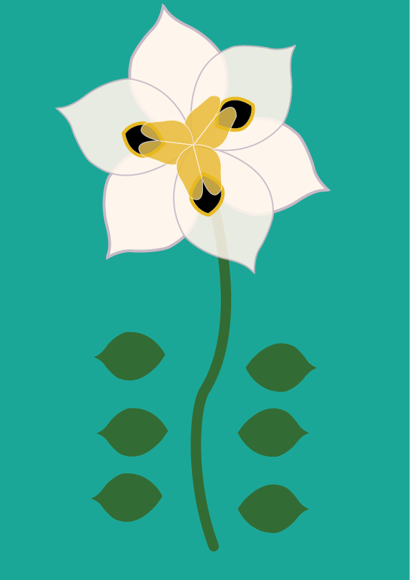
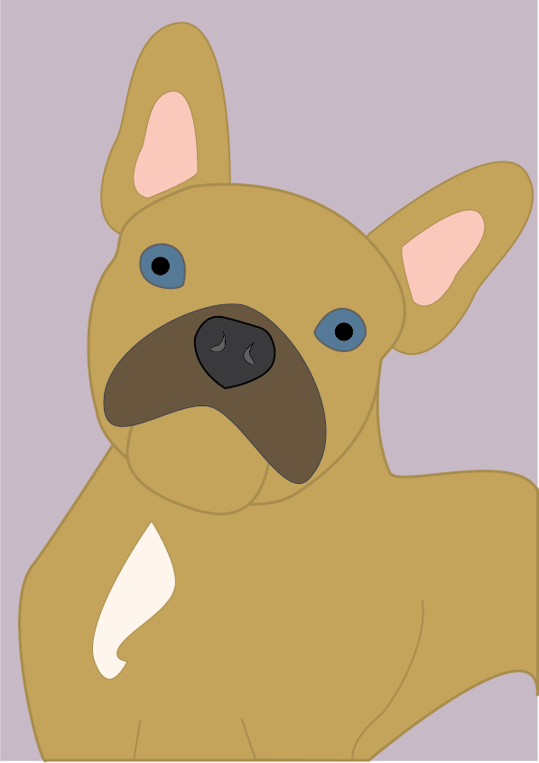
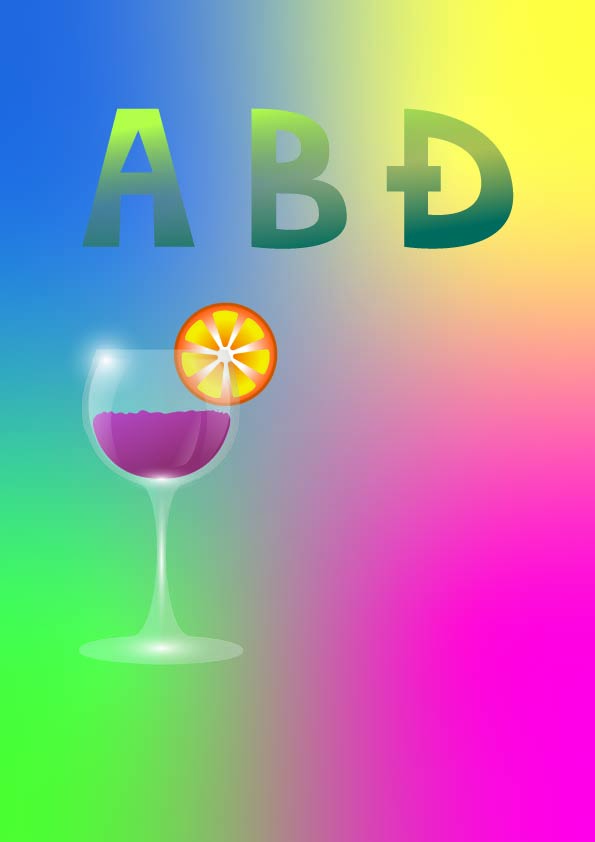
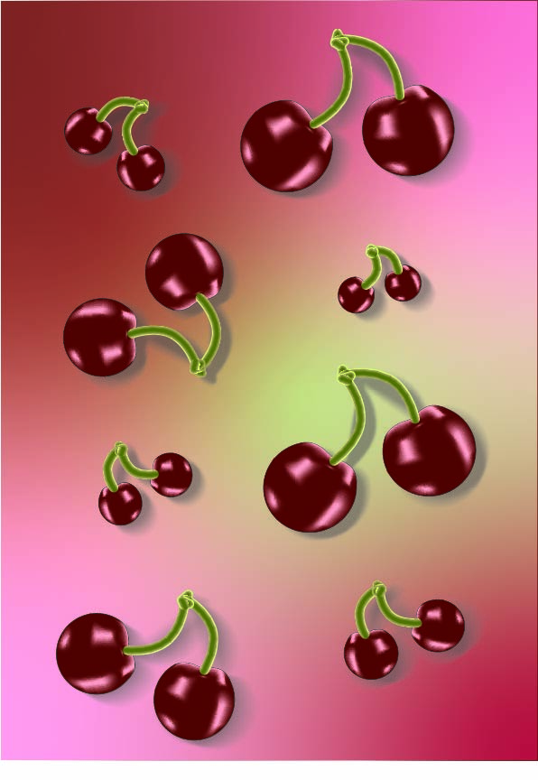

U okviru vektorske grafike upoznali smo se s temeljnim principima rada, s naglaskom na precizno oblikovanje pomoću Bézierovih krivulja. Kroz vježbe smo obrađivali transformacije, rad s uzorcima, bojama, gradijentima i transparentnošću. Sve naučene tehnike primijenili smo u završnom projektnom zadatku koji je objedinio sve ključne elemente vektorske grafike.

 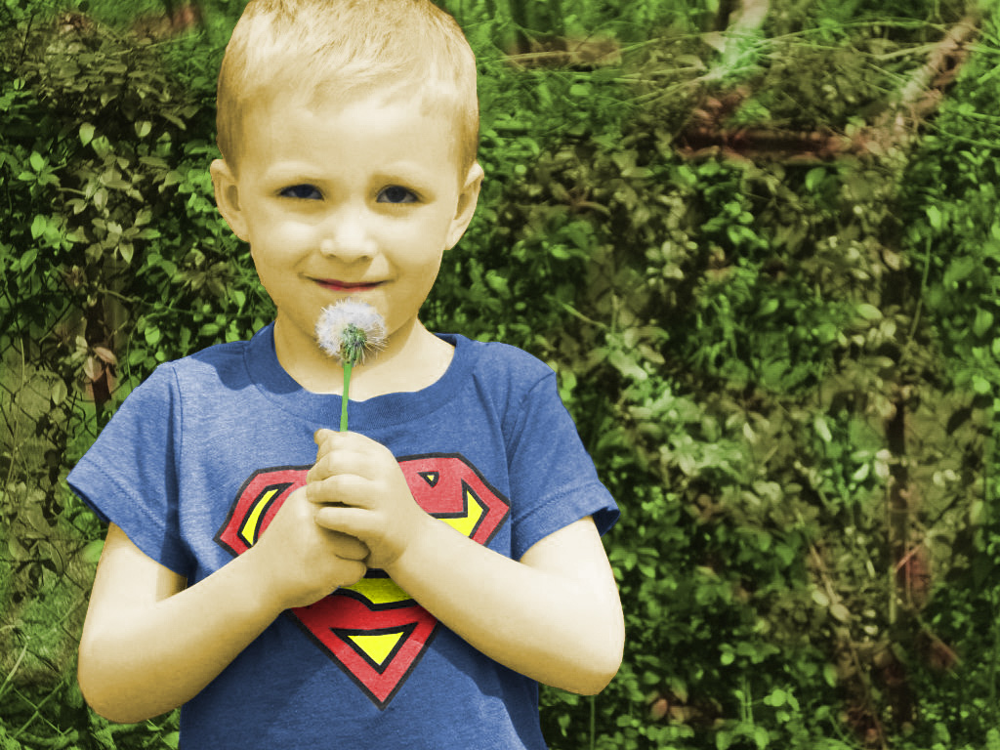
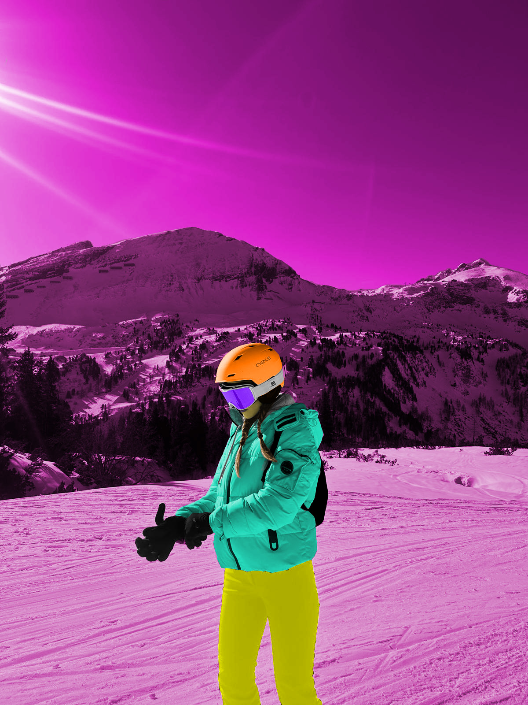
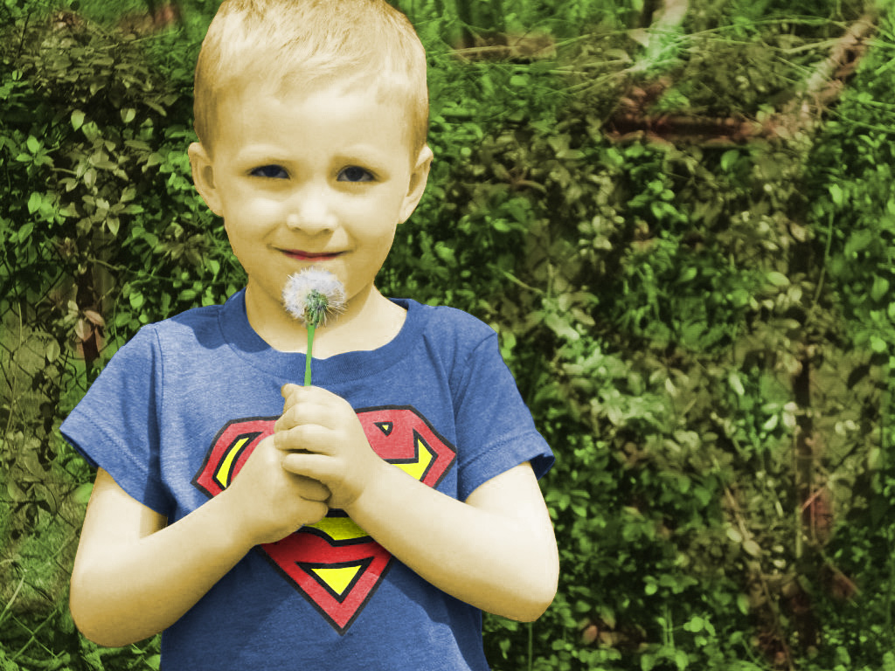
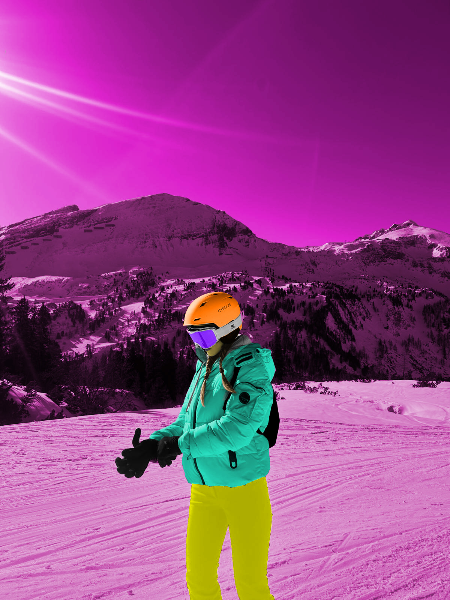Rad u piksel grafici bio je usmjeren na obradu fotografija i vizualnu manipulaciju slike. Učili smo tehnike retuširanja, koloriranja te izrade fotomontaža, s naglaskom na realističan i estetski rezultat. Završni projekt omogućio je primjenu svih stečenih znanja kroz samostalni kreativni rad.

U dijelu posvećenom video obradi upoznali smo se s osnovama rada s pokretnom slikom. Fokus je bio na izradi kinemagrafa, gdje smo kombinirali statične i animirane dijelove kako bismo stvorili suptilne i vizualno atraktivne video forme.